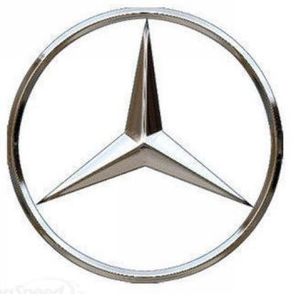

Mercedes-Benz (adeseori scurtat la Mercedes ori doar Benz) este o marca germana faimoasa de automobile, autobuze, camioane si auto trenuri rutiere care este proprietatea companiei pe actiuni DaimlerChrysler AG (cunoscuta înaintea fuziunii sale cu Chrysler, ca Daimler-Benz.
Compania Daimler-Benz AG a fost înfiintata în 28 iunie 1926 când doua companii, Benz & Cie. si Daimler Motoren Gesellschaft (DMG), au fuzionat.
Fondata în 1871, Benz & Cie., a fost una dintre cele mai importante dintre companiile fondate de Karl Benz, fiind si unul dintre cei mai vechi producatori de autovehicule. DMG a fost o alta companie axata pe constructia de autovehicule, fondata de Gottlieb Daimler si Wilhelm Maybach în 1890. În 1900, Daimler a murit, iar Maybach a parasit compania fondata de cei doi în 1890. Pe vremea aceea, cele doua companii devenisera deja rivale.
În 1924, datorita situatiei economice dezastroase în care se gasea Republica de la Weimar, cele doua companii rivale au intrat într-o "Întelegere de interese mutuale", care le permitea sa produca si sa vânda propriile produse în mod independent si care urma sa fie valabila 75 de ani, pâna în anul 2000. Dupa numai doi ani, în 1926, odata cu fuziunea oficiala a companiilor Benz & Cie. si Daimler Motoren Gesellschaft, numele Mercedes-Benz a fost creat.